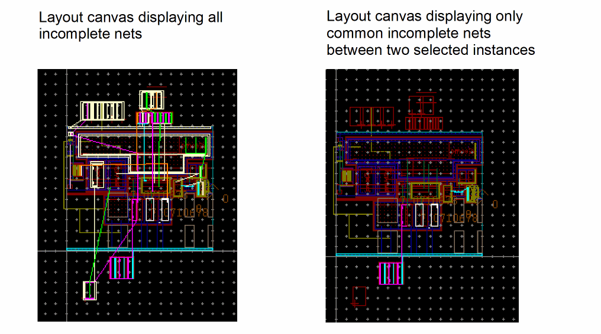

Showing Common Incomplete Nets for Selected Instances
The Show Common For Selected Instances command enables you to display only those incomplete nets that are common between the selected instances.
For example, if a design has three instances, |1, |2, and |3, such that:
Then, with instances |2 and |3 selected, only Net B is displayed.
To see the result of running the Show Common Incomplete Nets command:
-
Choose Connectivity – Incomplete Nets – Show/Hide All Incomplete Nets command to display all the incomplete nets in the layout canvas.

The Show Common Incomplete Nets command supports both preselection and postselection modes.
- In preselection mode, the command toggles between displaying and hiding the open markers for the nets that are common to the selected instances.
- In postselection mode, you can use an enter-function to select or deselect the instances for which you want the open markers on the corresponding nets to be displayed. In post-select mode, the open markers stay visible after the enter-function is canceled.
Related Topics
Showing Incomplete Nets in Preselection Mode
Showing Incomplete Nets in Postselection Mode
Return to top